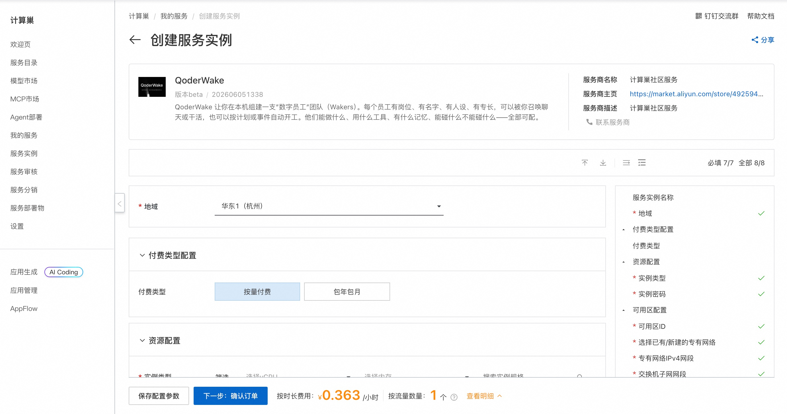
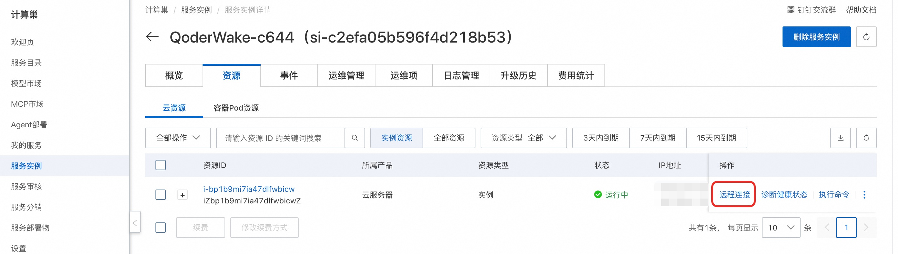
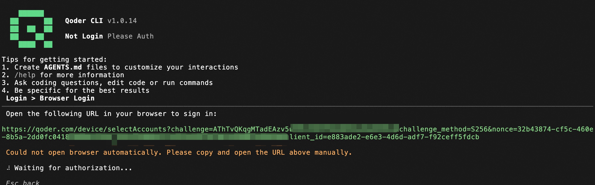
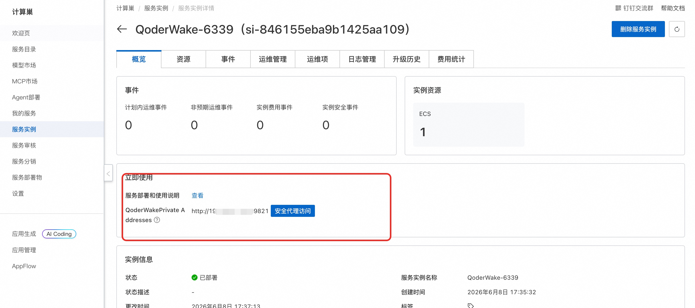
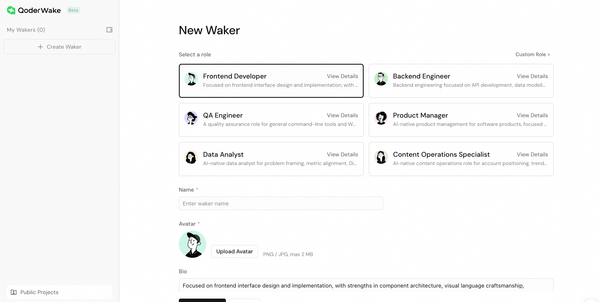

🌟 服务简介
💥 告别"做完即忘"，让数字员工成为你 7×24 小时在岗的超级同事！
QoderWake 不只是 Agent 工具——它是有身份、有记忆、有红线的生产级数字员工，自主执行、自动复盘、越用越准，让团队整体产出真正提速！
QoderWake 是阿里巴巴推出的业界首个安全可控、持续进化的生产级数字员工产品，能在真实工作中承担软件工程师、运营、分析师等岗位角色。它采用创新的 Harness-First 架构，每次执行后会把经验沉淀到记忆、技能、策略、验证规则和工作流五个维度，并基于内置的防腐机制（Anti-Rot Governance）持续淘汰过时经验、合并冲突、撤回失效策略，从根本上解决通用 Agent "做完即忘" 的问题。
🚀 部署流程
-
访问计算巢 QoderWake 社区版 部署链接 ，按页面提示填写部署参数：

-
参数配置完成后，系统将自动生成费用预估明细。确认资源配置无误后，点击 下一步：确认订单。
-
在订单确认页，确认后点击 立即创建 开始部署。
-
部署完成后，通过控制台远程连接ECS。

💡使用示例
-
通过 TUI 登录 Qoder，在终端中启动 qodercli ：
bash sudo su cd /root source /root/.profile qodercli -
在交互式界面完成授权，然后选择 Login with Qoder Platform (Browser) ：

-
复制完整链接在浏览器打开并批准登录。
-
登录完成后，Ctrl+C 退出 qodercli，然后执行 qoderwake 命令启动服务：
bash qoderwake start --host 0.0.0.0 nohup socat TCP-LISTEN:19821,fork,reuseaddr TCP:127.0.0.1:19820 >/dev/null 2>&1 & -
服务启动后，可以通过安全代理访问 WebUi。


📚 使用指南
使用请参考 QoderWake 官方文档 了解完整能力与数字员工岗位列表。